Peristaltic Pump Tubing Removal and Replacement
Parts and Materials Required
- Proper PPE
- Minimum of 4 MTUs
- PANTHER PERISTALTIC TUBING, NO FITTINGS
or
- PANTHER PERISTALTIC TUBING KIT, WITH FITTINGS
Time Required
Preparation
Initialize Modules
- Put on proper PPE.
- Start up Service Software.
- Initialize the Distributor.
- In Service Software, select Distributor > Main.
- Highlight Distributor and press Initialize.
- Initialize the Input Queue.
- In the service software, select Front and Loading Units > Main.
- Highlight MTU Input Queue and press Initialize.
- Initialize the Output Queue.
- In the service software, select Front and Loading Units > Main.
- Highlight Output Queue and press Initialize.
Load MTUs
- Open the MTU Input Queue drawer and load at least 4 MTUs.
- Close the MTU Input Queue drawer.
- Push the MTUs.
- In the service software, select Front and Loading Units > Main > Input > Sensors & Actors.
- Press Push MTU.
- Insert an MTU into the Output Queue in order to catch any deactivation fluid that might drip during the replacement of the peristaltic pump tubing.
- In Service Software, select Distributor > Move Distributor > Single Movement to.
- Double-click MTU Input Queue to grab an MTU.
- In Service Software, select Distributor > Move > Single Movement to.
- Double-click Output Queue to place an MTU.
 | WARNING—Check the Output Queue to confirm that an MTU was actually inserted into the module. |
 | Note—Replace according to the two types of parts: (A) PERISTALTIC TUBING, NO FITTINGS, AND (B) PERISTALTIC TUBING KIT, WITH FITTINGS. |
Remove the Peristaltic Pump Tubing Assembly
 Locate the peristaltic pump.
Locate the peristaltic pump.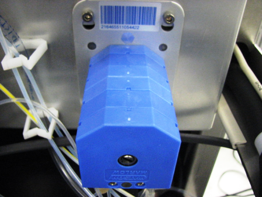
Each pump has two peristaltic pump tubing assemblies (fluid pathways). Begin with the rear peristaltic pump tubing assembly.
- Press on both release points on the rear peristaltic pump housing top cover and pull upward to remove the cover.
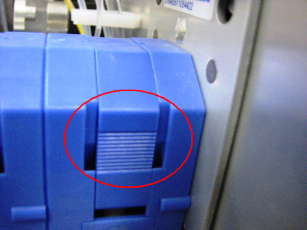
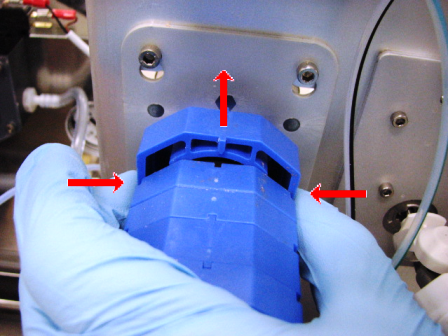
- Wait 15 seconds to allow fluid to drain back to the service bottle.
- Slide each end of the peristaltic pump tubing assembly away from the pump to remove the assembly.
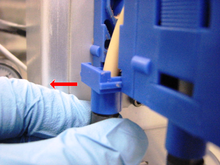
- Remove the fittings and connectors (A–D) on both ends of the peristaltic pump tubing assembly and retain these connectors.
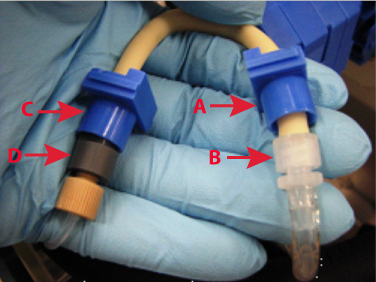
- Discard the old peristaltic pump tubing (just the beige two tubings) in the biohazard waste.
- Change gloves.
Replace the Peristaltic Pump Tubing Assembly, No Fittings
- Locate the new peristaltic pump tubing assembly.
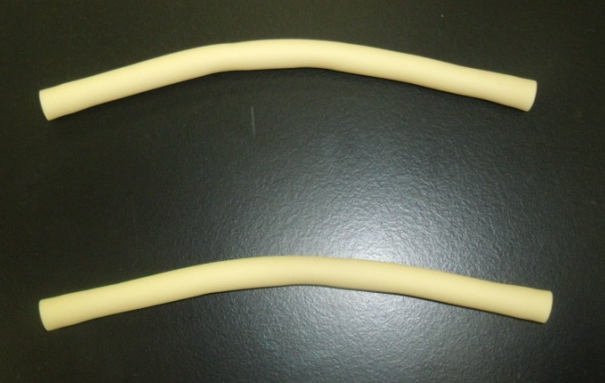
|
|
Note—Only the beige pieces of tubing are supplied in the assembly. The ends that were removed in step 4 in the Removal section will be used to make a complete assembly. |
- Place one piece of the beige tubing on an absorbent pad.
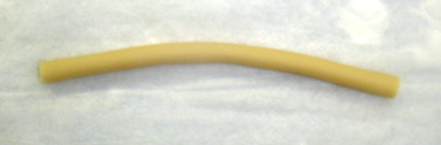
- Place the blue connectors on the ends of the beige tubing.
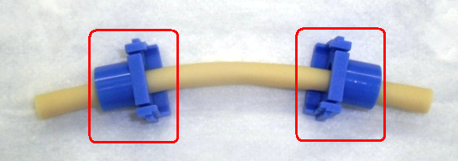
- Connect one connector to the right side of the tubing.
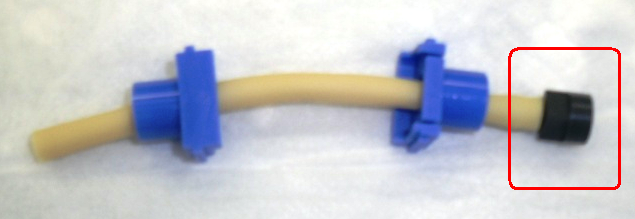
- Connect the second connector to the left side of the tubing.
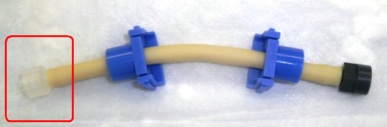
- Place the second beige tubing on an absorbent pad.
- Place the red connectors on the ends of the beige tubing.
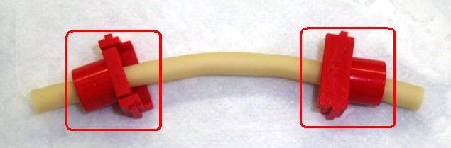
- Connect one connector to the right side of the tubing.
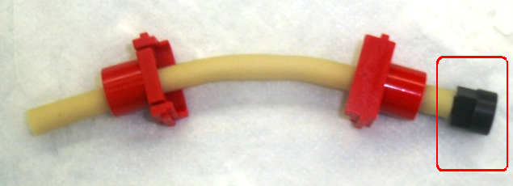
- Connect the second connector to the left side of the tubing.
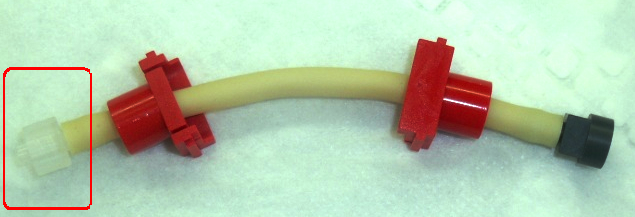
- Replace the rear peristaltic pump housing top cover and ensure the tabs follow the grooves.
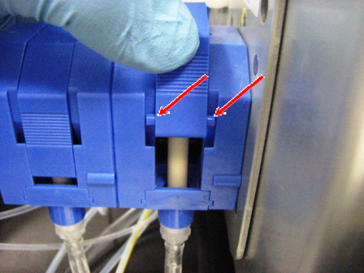
- Repeat the previous steps for the front peristaltic pump tubing assembly.
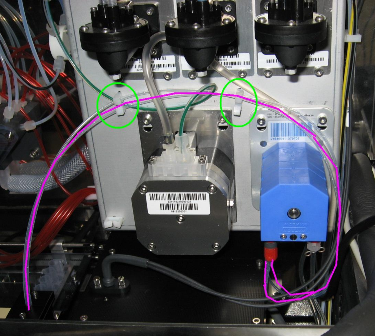
Calibration
Verification
- the system through the Panther System main software.
- Perform a Visual Dispense Verification to the Output Queue.
Remove the Peristaltic Pump Tubing Assembly
- Locate the peristaltic pump.
Each pump has two peristaltic pump tubing assemblies (fluid pathways). Begin with the rear peristaltic pump tubing assembly.
- Press on both release points on the rear peristaltic pump housing top cover and pull upward to remove the cover.
- Wait 15 seconds to allow fluid to drain back to the service bottle.
- Slide each end of the peristaltic pump tubing assembly away from the pump to remove the assembly.
- Remove the fittings and connectors (A–D) on both ends of the peristaltic pump tubing assembly and retain these connectors.
- Discard the old peristaltic pump tubing (just the beige two tubings) in the biohazard waste.
- Change gloves.
Replace the Peristaltic Pump Tubing Kit, With Fittings
- Locate the new peristaltic pump tubing kit assembly (the assembly includes fittings).
- Attach the appropriate fittings for the Output Queue injector tubing and the Output Queue deactivation fluid tubing to the new peristaltic pump tubing assembly.
- Slide each end of the tubing assembly into the pump.
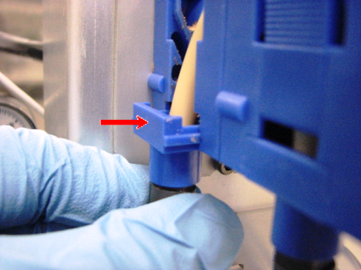
- Replace the rear peristaltic pump housing top cover and ensure the tabs follow the grooves.
- Repeat the previous steps for the front peristaltic pump tubing assembly.
Verification
- Prime the system through the Panther System main software.
- Perform a Visual Dispense Verification to the Output Queue.
Click the  button at the top of the page to send feedback, comments, or change requests.
button at the top of the page to send feedback, comments, or change requests.